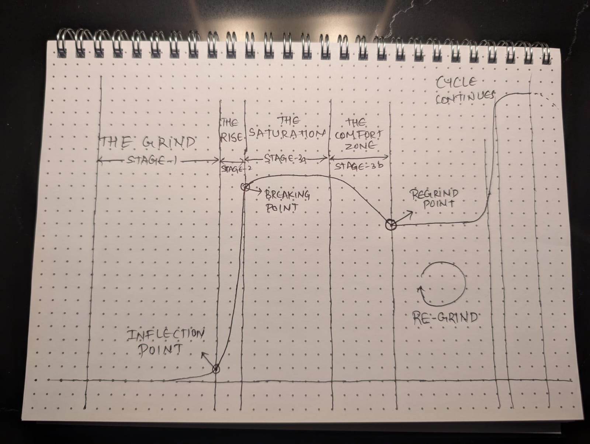

In our social media–driven world, success stories often seem like sudden, magical moments. We see people “blow up” overnight, secure big promotions, or land million-dollar deals. But behind almost every story of rapid success is a hidden, unglamorous truth: years of consistent grind that built to a tipping point.
That tipping point, when invisible effort finally bursts into visible results, is what I call The Avalanche Philosophy.
Just like an avalanche, success starts with silent accumulation. Snow piles up unnoticed on a mountain for days, weeks, or even months until one small shift releases it all at once. This philosophy captures that journey in four core stages, along with the critical choice that restarts the cycle.
The Avalanche Philosophy Diagram
Stage 1: The Grind
This is where dreams are born and most often abandoned. The Grind is repetitive, often boring, and rarely rewarding in the moment. It is the season of early mornings, late nights, and constant practice with no immediate payoff. Here, progress is mostly invisible. But something important is happening: skills are compounding, networks are quietly forming, and credibility is being built.
Inflection Point: The Avalanche
Then one day, perhaps triggered by a lucky introduction, a viral post, or a sudden opportunity, the work pays off in a surge of results. This is The Avalanche, the steep climb in your career graph when years of preparation collide with the right moment. To outsiders, it looks like an “overnight success.” To you, it is the inevitable release of momentum you have been building all along.
Stage 2: The Rise
The Avalanche carries you into The Rise, a period of rapid growth and increasing opportunities. Your reputation expands, revenue grows, and people start seeking you out. It is tempting here to believe you have “made it” and the climb will never slow. But the truth is that no rise lasts forever.
Stage 3: Saturation & Comfort
Stage 3a: Saturation
Eventually, growth flattens. This is Saturation, the plateau phase. You are still performing well, but results feel stagnant. This is an alert stage, the point where you must re-evaluate, innovate, and prepare for your next big climb. Detecting saturation early is one of the most valuable skills you can develop.
Stage 3b: Comfort
If you miss the signs of saturation, you slide into Comfort. This is where decline begins. You might still look successful from the outside, but you are living off past momentum while your skills and impact quietly erode. Comfort feels safe, but it is the riskiest place to stay. It not only slows your growth, it also rewires your brain to believe “things are fine,” creating mental justifications to avoid change.
The Re-Grind
The only way out of Comfort, or even a prolonged plateau, is to consciously restart The Grind. That means embracing the humility of beginning again, applying what you have learned, and building towards your next avalanche. The good news is that the second cycle is often faster because you start with more skills, resources, and relationships.
The Cycle Repeats
The Avalanche Philosophy is not a one-time journey. It is a repeating loop for the entirety of life. Your job is to:
- Stay disciplined in The Grind.
- Stay humble in The Rise.
- Stay alert in Saturation.
- Stay honest in Comfort.
- Stay willing to Re-Grind.
What the Avalanche Reveals About Different Personalities
The Avalanche Philosophy does not just describe success. It shows how different people navigate, or fail to navigate, the cycle.
- Highly successful people have faster avalanches, skip the comfort stage, and embrace multiple re-grind cycles in their lifetime.
- People with curiosity but no patience rarely make it past The Grind. They leave before momentum builds.
- Visionaries often have multiple re-grind points throughout their career, intentionally reinventing themselves.
- Once-successful but now stagnant individuals are often those who stayed too long in the comfort zone.
Why This Matters
Understanding this cycle keeps you from quitting too early, coasting too long, or mistaking comfort for success. It reminds you that real growth is not a straight line. It is a series of avalanches, separated by long seasons of invisible work.
If you embrace the philosophy, you stop chasing quick wins and start building the kind of momentum that, when released, feels unstoppable.